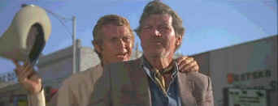

Junior Bonner/B+,B+
|
Anchor
Bay/1972/110m/WS 2.35,PS 1.33 |
Not
a whole lot happens in the few days in the life of these rodeo folks in Sam Peckinpah's Junior
Bonner, but this small gem of a film is all about subtext. Almost everybody has some
history with each other. And around all the action of the rodeo scenes, the personal drama
of the Bonner clan is playing out.
 |
Junior and Ace ride in the parade.©Anchor
Bay |
Once again exploring the
theme of a changing society and the last of a breed of men, Peckinpah glues the camera to
Junior, the former rodeo champion looking for another victorious ride. The challenge of
beating the best bull, staying afloat for a precious eight violent seconds, wraps up
Junior's life in a fragmented time capsule. When Junior returns to his home town of
Prescott, Arizona, he is greeted by bulldozers attacking his daddy's ranch. There's a
strange, fine moment when the doze and Junior's Cadillac face off against one another in a
perfect image of understanding the relentless nature of change. The liveliest scenes are
when Junior and his Dad hook up together and that's a tribute to the screen magic of the
actors.
Junior Bonner is a great part for Steve McQueen. His
natural charm makes the rodeo cowboy a thoroughly appealing figure. A man of few words who
knows what he wants, Bonner and McQueen are soul mates. Robert Preston maybe speaks with a
bit too much Music Man is his voice as poppa Ace Bonner, but Preston's vivacious
personality matches beautifully with McQueen's laconic style. Ida Lupino plays Elvira
Bonner, Ace's estranged wife, with marvelous dignity. These two old pros exchange sparks
with the ease of many movie years behind them. Joe Don Looney rounds out the Bonner family
with an impressive and expansive performance as Curly Bonner. Peckinpah's great supporting
players are make their presence felt and give Junior Bonner that added edge of
reality. Ben Johnson is splendid as rodeo man Buck Roan. Dub Taylor pours the drinks at
the Palace Bar with abandon.
Peckinpah and director of photography Lucien Ballard are a great
team. Whether shooting Bonner's memory of his Sunshine bull ride chromatically or cranking
down the camera to capture the destruction of the Bonner ranch, Ballard's eye is
impeccable. Peckinpah cuts with his usual brilliant precision pieces the images together
in a graceful flow. Jerry Fielding contributes a rollicking country rodeo influenced
blue-grass score.
Junior Bonner is a fine widescreen DVD. The source
material is clean making for a smooth transfer ride. Detail is excellent and artifacts are
at a minimum. Color levels are consistent with plenty of intensity. Ample light output and
good contrast make for a punchy picture. The Dolby Digital 2-Channel sound is clean with
dialogue clearly standing out against background sounds. This is a no frills DVD
with only 12 chapter selections offered on the menu.
|
|
Home Theater Reference System
Laser discs and DVDs are evaluated on the
following current home theater equipment: Stewart 6' x 11' Videomatte 1.33
Gain Screen, 2 Runco 980 Ultra Projectors stacked, Faroudja LD100 Line Doubler, Lexicon
DC1 Surround Processor/Switcher, 2 Pioneeer Elite CLD-97 Laser Disc Players with AC-3
Modification, Sony 7000 DVD Player, Toshiba SD-3006 DVD Player, Total Media Systems
Reference Home Theater Suite, LR Fronts, Center, LR Sides, LR Rears, 2 Velodyne F1500R
Subwoofers, Sunfire Cinema Grand5 Channel Amp, Sunfire 2 Channel Amp, Lexicon RF
Demodulator, Lexicon T-500 System Remote Control, Speaker Wire and Interconnects by
Straight Wire.
|
HOT LINKS
The American Widescreen Museum
The wealth of information about widescreen movies is presented in a intelligent and
easy to understand interface. Color in movies is given a similar treatment. |
|

Robert Harris is part
of the dynamic duo that restored Lawrence of Arabia, Spartacus, My Fair Lady and Vertigo.
Harris rides a white horse into the battle to preserve our film legacy. Click on the
image to read more.
|
Check out the Movie Poster Archive
for short bios and images of Susan Hayward, Kirk Douglas, Katharine Hepburn and many more.
This month's featured star is John Wayne. The Feature Archive has articles
ranging from Akira
Kurosawa to Blonde Bimbos
and John Ford.

Click on the image of The Heistmasters
for an interesting feature on the tough guys that pull off the big jobs.
|
|